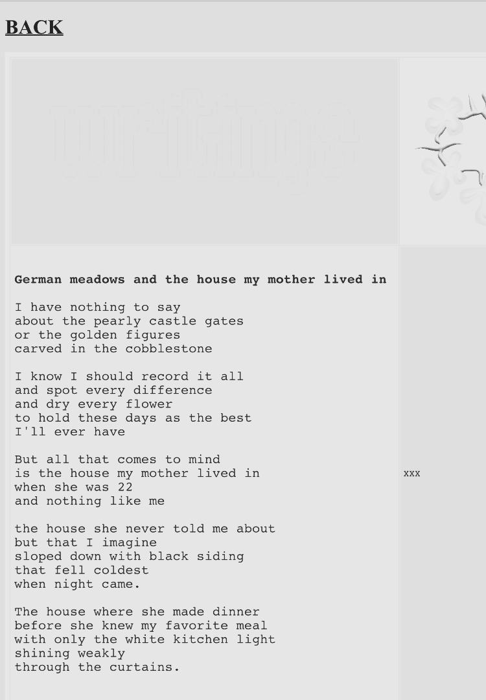
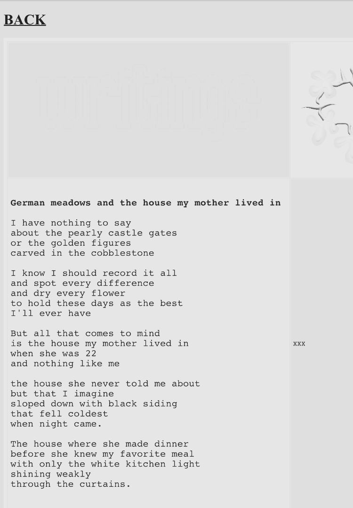
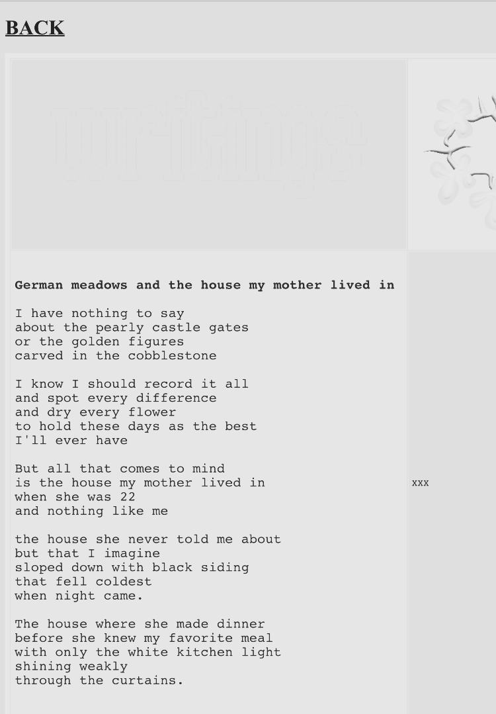

Sometimes I get afraid to write, this is one of those days. Sometimes I fear I have left too much of myself out on the countertop to be slowly
trimmed with the old deli meat slicer, that some user named ihatestreetrees69 is about to log in and tell me that I'm really not very interesting. More
likely though they won't say anything at all, they'll just leave me to fill in the blanks.
I applied to be a busser at Claim Jumper, then I drank a lot of the very-good $2 coffee at Common Grounds and fucked around with google sheets for a while. Someone asked
me how is it being in limbo? It sucks, I said. Today is an off day, was from the moment I tried to upload some files and the website errored - leaving me stranded
without a purpose, no way to keep moving, and too tired to find another way around. Seems I'll camp here for the night, but it's only 1 pm.
Last night I left the coffee shop and held my jacket to my chest walking walking briskly but soon the understanding began to set in that in the dark I did not know
where my car was. This wasn't too bad since I wanted to walk anyway, and I never was really trying to find my car at all, I had just been walking. Then I looked up and
saw the clouds were many small rectangles that looked stitched together like a quilt, a quilted sky I thought. The quilt was being pulled quickly over the moon which
was of course, full. If I made music I might make a song called A Quilted Sky, then I would make one called Bugs in the Curcuit Lounge which is the subject line of
an email that M forwarded to me yesterday.
And while we're on the topic of yesterday, I saw the girl in red yesterday. I call her that because she always wears these ridiculous red cowboy boots and is just so obviously
a lesbian. I didn't like her for the longest time because she also wore plastic bug earrings and only I can wear those. But really it's comforting to find your mirror,
once you get used to it. I wasn't seeking her out exactly but I did go to the insect zoo where I knew she worked, and since it was a full moon she was of course, working.
She seemed happy and startled to see me and offered me an orange jumping spider to hold. She told me they watch TV together.
I like girl in red because she usually reminds me of my mom. That's also why I usually dislike her. Later that day (yesterday) I was looking for some way to kill the
flies that burrow into the shit sitting in the plastic tub beneath my composting toilet. I used to use this strange brown powder I bought off eBay but I can no longer
find it, so I just bought more fruit fly traps. I walked into a beautiful nursery with a mural of native birds and fern fronds on the outside and started
searching for some sort of toxic chemical. Wait, the lady said - how do you even know they're fruit flies?
ENTRY 11 January 30. 2023
* Removed for the time being *
ENTRY 10: January 23. 2023
Film students. We all know one. Film students are to writers what a shiny purple rock in the souvenir shop is to refined post-processed pure uranium ore. All bark and no bite.
Ha Ha Ha. I'm just kidding. I got to meet some film students this last weekend at a fun little house party. I made my rounds and talked to this
one named G a lot, he asked me what I study and I said the typical: Biology and German. He didn't really seem interested in that and started telling me about this
movie he directed, it's this surreal psychological thriller about coming of age or something. Have you ever heard of Heidegger? It's like completely sein v Sein ya know?
No, Ha Ha Ha, really everything is about perception. Recently, I've been obsessed with the notion that my thoughts become my reality, so for example
I believe, that thoughts can change your body. And then it dawned on me, your body can change your mind.
Now, I'm sorry to ask but were those car seat headrest lyrics? While I'm at it, I don't really
see what Heidegger was concerned with perception at all, it actually seems like you just threw that in willy-nilly. Now, I on the other hand am a writer. I know I said I was
a Biologist before but just forget that, I actually am a very accomplished writer.
Oh. What do you write?
Oh, I write .. I would call it magical realism. Surreal. Like Kafka, I have a blog. It's very cool, and I write about my life and what happens to me but like, better.
Are you writing as a character?
Yes, I mean we are all characters right? You and I are playing characters right now.
Hey, can I have your number?
Film students. If you ever want to hook up with a film student just tell them you've been thinking a lot about how our perspective changes our reality, like
how the lens of the camera can change the perception of the viewer, yeah I'm actually on prozac right now too, yeah it's been weird.. and go from there.
G: You should really try writing as characters. So in a film script it's all about action and dialogue, right? And I'm fine with the dialogue but sometimes it's
the action parts that get me.
H (in character): I thought your background was acting, wouldn't that be the easy part for you?
G: God you're aggressive. Have you ever written any screenplays?
H: Um. no. I just write on my blog mostly.
G: It's like a travel blog?
ENTRY 9: January 18. 2023
A Strange Dream
I've been feeling strange, I guess you could call it sick. Sometimes when I look at a window the glass seems to move like water. Other times I feel that if I
go to sleep I will never wake up. I start to listen to my heart beat and it begins to feel unfamiliar. I worry that I am dying.
Strange thoughts came last night, I was again confined to the bed - somehow unable to straighten the room that seemed to slide downward into a lifetime of this
strange feeling. I opened my eyes and looked at the wood grain of the ceiling as I wondered when it would happen, that I would die. I thought about the Burnside
Bridge then, a place I used to always walk to when I was feeling out-of-sorts, when I lived on that side of town. That seemed to do it, yes, I'll walk to the
Burnside Bridge.
Only a short walk down the hill and I came upon a figment, a man huddled over in the cold night, holding a loose blanket to his chest and leaning over the
grass along the road. Of course I knew that I was meant to talk with him;
Do you have a flashlight?
No, but I can light something up for you.
Yeah, these are definitely not Psilocybin.
You're looking for mushrooms? (Laughs)
I studied Mycology.
I hand him a cigarette. The mushroom searcher stands in the road, his backpack on his hip, his face carved in deep grooves, all the while he is young, only 40.
You ever find magic mushrooms out here?
Here, no. Once I took a whole quart of cubensis, that was horrible. The whole ego death thing.
I had that once, I took salvia, it was crazy, I thought I had become a letter.
Oh salvia, yeah that stuff will mess you up. I took some once and died.
Yeah, exactly - like you think you're fucking up the whole universe -
No, not like that. I really died. I fell off the Burnside Bridge.
The mushroom searcher asked me if I believed in God. 'It's half and half' I said. I don't believe in Free Will.
I just do what matters to me now. I just go where I want. I screwed my whole life up, selling dope on Couch - getting shot up. But I value myself now, I like myself.
It's strange you said the Burnside Bridge, I'm headed there right now.
That's a long walk, you'll screw your feet up.
It's okay, I probably won't make it.
I have a bus pass if you want, the bus driver is a nice guy - thought I was sleeping on the streets just because I had this - I'm actually headed somewhere right now though.
It's okay, I'm alright to walk.
Take care of yourself. I hope to see you around.
I continued down the road, then, make it to the train yards, maybe that will be my ending? The machinery and the many colored boxcars are still and silent,
only the sterile lights above the yard seem to roam along the ground. The ground below the overpass is a great mud puddle, reflecting my face back to me. I keep going,
until the walk has gone on much too long. At some point, long to far, I begin walking back. My feet are killing me and I see racoons playing in the tree on Divison.
I feverishly make my way up the last hill. The sky is becoming light beyond the buildings.
ENTRY 8: January 17. 2023
A few lost days here and there, a few days spent between the floor boards.
I wouldn't say things are going great with the whole Germany thing, I got an email back from the school I was interested in - they said I'll need
to be basically native-speaker-type-fluent in order to take classes there. That wasn't exactly good news. Then my German professor here
at PSU said, H---- I can't help you with this at all, frankly I'm not sure why you are asking me, why would I know anything about graduate school
in Germany, I'm here aren't I? No, she didn't say that, but it was between the lines.
Well, I'll keep it moving. The last few days I think I've gone numb, like repeated hands in the fire.
I'll just keep trying, maybe going to school here wouldn't be so bad, so long as I could move for a while. Maybe I just need to take steps towards the
individual things that matter to me? i.e. talking to hot people
I got around to doing my year tarot spread, my theme of the year is the eight of swords - not the highest swords but we're getting there! Kim Kranz describes as follows:
Surrounded by obstacles and threats on all sides, you find yourself the victim. You see no way out, no available choices. Your perceptions
keep you from opening your wings and taking flight. What keeps you suspended here? Yourself or others? The Eight of Swords demands an answer. You
cannot hang here much longer.
She even had the audacity to draw the card as a butterfly (we read: moth) pupa hanging precariously above a bed of swords, presumably before the moth will
climb out - dry its wings - and take flight, the swords below revealed to be merely an illusion.
ENTRY 7: January 16. 2023
Suggested Listening:
WHERE THE NIGHT ENDS (TOGETHER PANGEA)
waking here by bonfire flames
rasp revolt the smoke climbs in
haunting our lip pink throats
fire lights your neck,
crouching morning sun behind
all bruised eyes in hillsides
land calls out from our new center
meet my eyes - the edge of glass
stars tear 'round our circle
black fields of starved
prairie town skeletons
dead weight in hot wind
drive me out just drive me out
leave me rotting in the road
drive and drive
but it's still here
green of the dashboard light
drive and drive
but it's still here
green of the dashboard light
ENTRY 6: January 15. 2023
TW: ED
I just can't seem to move, I can't seem to get to it.
I don't feel well.
Moving Right Along: B's Blog (Breezeblocks) got me thinking about legacy today, which is always a bad sign.
I think we all fantasize about having our writing published posthumously, it's fantasically passive to think about someone else valuing your work
so much that they do everything for you - all the editting and the fretting about whether anyone will even like it. Plus, you don't have to go through
the embarrassment of peddling your thoughts around, the hubris of saying 'yeah, I actually think you guys should listen to me on this one'. It sounds
delightful. Of course, you do give up control. I'm thinking particularly of the tale of old Nietzsche's nazi-loving sister. Still, you are dead anyway,
and future historians can probably sort the whole thing out.
I think I like this sort of thing, passivity. Perhaps not in a way that I should. I was thinking today that if someone offered me to be back in the hospital
with an exploding lymph node for a week I would take it. I would be so glad to be taken care of, to finally have absolutely nothing to do and no reason to
pull up my god forsaken knotted crummy crusty bootstraps. I could just lay there
letting god take my hand and lead me as They pleased.
Earlier this week, L and I talked about why I am restricting food. I told her it's because I'm trying to signal that I need help. But Help's A Fickle Thing and
I realized as I was talking with her that I don't actually want any help at all. I mean, sure, if someone could just figure out what I'm doing for me that would
be great - but it also wouldn't, because I probably wouldn't even like what they came up with. I think that I want support but I don't even know what that would look
like, so I'm just restricting food into the abyss. That's kinda how mental illness goes though, huh, it doesn't usually make sense.
I think I need routine, or maybe rest. Or perhaps Prozac? I just don't feel like moving forward, mostly because the place I am feels so dismal, why
walk when there is only another dark tunnel ahead?
ENTRY 5: January 13. 2023
Ummm. hey guys.
I think I accidentally made my blog too clean and then stopped wanting to write on it. A few years ago I had this old notebook I repurposed from my intro to
calc class or something and goddamn that was a good notebook, it was like falling apart, and yellow, and had coffee spilled on it a bunch of times. I wrote in that
thing daily. Then it got stolen out of M's car, anyway.
I invited the folks from E2 to my blog, if any of you guys are reading this - glad you made it... crazy weather we're having right now, huh?
To get into it - the last few days I've felt a bit strange. I keep ending up drinking too much coffee and then being unable to form long-form thought. It's like
I'm bumbling around (babbling about) and staying right
outside my ability to think straight. This is what happens when you can't use weed, let me be a cautionary tale.
I went through all my old posts, cleaning things up a bit, and I guess it taught me a few things. They weren't as bad as I was expecting, most I still respect. I talk a lot about Germany, which is sweet - wanting to go there, wanting to be there, wanting to stay there. I
met with L today too and talked about this, can we call it a hyperfixation? I think I need to chill out, but also I'm not sure where chilling out will get me? I'll
feel better? Okay. But maybe I should just let my anxiety take this one and I'll ride 'em like an old filly ("ain't never met a filly that could throw me" -
Brokeback Mountain (2005)).
Another point: I wish I was a higher level on E2 just so I could put this photo on my profile (young kafka):
At least it's good to have goals. The problem is: how do you cope when your goals are so all-consuming that you appear to be wildly depressed and struggle to
find any reprieve in any activity that you try and do? The thing is, I desperately don't want to do anything. I feel like I'm bare-minimum existing, and daydreaming -
all the time. Here's my new one:
I'm back in Berlin (side note: my computer booted up with a picture of the Brandenburg gate today, how fucking dare ??), I'm in the middle of the giant
asphalt plaza (not limp/nor stale) that is Tempelhof airport, I'm back at the music festival watching Enumclaw perform, I yell up to them that Holy Shit I'm
FROM Enumclaw ! The main guy sees me and is like, no way! I say 'Yeah I'm A MotherFucking Horse Fucker' we all laugh. C is there and we're married, also to Enumclaw.
they're part of the polycule too.
it's really good to have goals.
ENTRY 4: December 30. 2022
I have a favorite mug. Sometimes I don't like to think that I do, since I have so many mugs that I like i.e. have been gifted by close friends,
have sweet memories attached to them, remind me of old feelings and old things that I used to do, or still carry the tea stain of this or that time,
similar to cliff-side stratigraphy. But I have only one favorite mug. It's on the small side, the size of your hands clasped together. It's white
with a cute little clef note for a handle, and on the top it has a ring of fifteen tiny strawberries, a thin green border, and two big strawberries
entwined, drawn in that speckled classroom style, and colored in just plain green and red, simple as can be.
Sometimes the mug itself can transport me, other times it is a vehical for me to move myself. I used to connect the mug with a hardened memory or perhaps
it was really a tightly held dream.
In the memory my mom has taken me to her friends house to play, the friend and most of the walls and
contents of the house never appear, just a downward view of the kitchen sink (stainless steel) as though I am standing far above it, perhaps held? On the
white wax sill of the kitchen window are many glass trinkets and a small spongey orange frog. I love the frog, I see wood cabinets and dirty brown carpet,
I am new, and seeing for the first time with eyes that are hooked to memory, long, long cords of memory.
After the new association between my strawberry mug and the orange frog, the mug began to gain power. Now I can make it show me other happy little notes,
like itchy sawdust, sidewalk chalk, green gardens. It's kitsch, sure, but I place a high price on nostalgia. Why live if we do not spend time
looping through our favorite memories? Plus, some people say that growing up is only learning to love again what you did as a child. I find my mug
meditative, maybe even grounding, although I worry that using it when I'm really lost could form new tainted associations, so instead I usually seek it
out when I'm feeling just plain. My crystal ball to mundanity.
ENTRY 3: December 28. 2022
Yesterday, M and I went to the beach to see some thirty foot waves promised on the news. The day was stormy and blustery and much of our
drive was spent winding through dark forest trees that swayed and shook their mossy arms over our heads. Rain was everywhere, sometimes turning the windshield into a blurry mess
when the wipers couldn't keep up. It was really coming down in sheets, as though you could see the lines of rain in the air coming in
vertical waves, the sky looked like rippling fog.
On our way home, M asked me about my plans for going back to Germany. I happened to be looking towards the line of beach houses out to the
west, focusing on one in particular that formed three concrete sections, harsh things that sloped down to reveal a car parked beneath its
sallow body. The far wall was open, a bright square of light that showed through to the sand spraying from the ocean and the ocean itself, another body.
I pretended to be thinking about the question and instead thought about labyrinths. About hopelessness.
I answered agressively and then went back to picking apart the open window, the bright square of light that appeared sunk below the belly
of the neighborhood. Thought about turning around and around in that concrete, looping through tunnels to come out at that sea window. Thinking
you've gotten close enough.
ENTRY 2: December 17. 2022
Suggested Listening:
WATER TABLE (COLA)
Been thinkin' a lot about 2002. Probably due to Everything 2, which of course peaked in popularity around that time. I wanted to write a hommage to
one of my current favorite nodes on the site:
I was riding shotgun in the Acura on a peculiar blue day at the beginning of the Christmas holiday. My partner needed to get gas at Freddys
since was freshly under 4 dollars - everyone else in Clackamas must have had the same thought because the pumps were thronged with
cars all huffing and puffing cold exhaust in the mid day sun. We were behind a dirty CRV with vulva bumper stickers and two greasy lesbians at the
wheel. Behind us was a shitty red pickup holding the object of my affection, disheveled Tank soon to become a folk hero of my mind. He was lighting
up a bowl in the cab of his truck, through the rearview window behind his head waved large grasses and ferns in dirt buckets, the fronds so tall they surrounded
his cab in his own personal ecosystem. Tank was slow, languid, lovely. I thought about him leaving his landscaping job to wait for gas in the Fred Meyers parking lot,
how he made out quiet so none of his favorite co-workers would ask to come, then let time come to a stop as he inhaled and exhaled the weed he grabbed from his
center console. When it was Tank's turn at the gas pump he got out and tried to help the attendant, walking circles around the truck and revealing to me, his
guardian angel, his god, his shiny belt buckle. Tank gave the attendant a dopey smile and watched the pump, eyes never meeting mine. When Tank drove off into the
neighboring Taco Bell drive thru I felt grief, that I would never know him. Moreso, that I would never be him. That I was fated to anxiously weave the memories
of passing ants like him into my daily life while he waited calmly at the pump, looking bashfully at the cracked concrete. Call me, Tank.
ENTRY 1: December 12. 2022
Yes, I'm starting 2023 with a clean slate, launching a newer yet older version of StreeTrees. I've wanted to
recreate Windows 95 for a long time, yet never had the patience (n)or time to fully implement my vision for
the site. Pulling up my old blog now feels like a cheap prototype, which has been a common theme in this
web-journey. I'm considering adding a few poems to the archive folder that I want to keep lugging around,
but otherwise I'm looking forward to a new START to StreeTrees.
I wanted to launch with a brief rememberance of what I've accomplished this year (in the virtual
realm) and a look ahead too. After all, what is more 90s than dreaming?
StreeTrees Version 1:
☆ The blog was launched on Github for the first time on April 21st 2022, I didn't even take a screenshot
on my computer at the time so all I have is a few screenshots from my phone showing the first version. This version
included a blog and writings pages, the original name of the blog "CYBER HUNTER" in large ascii letters, and
a few cyberpunk type gifs.

☆ About a week later V.1.1 was released, adding a more cohesive 90's coffee-house aesthetic. I changed to a calmer brown
background and added the first music to the site, Zero 7's Polaris. This was the start of adding story and
ambiance to the site itself, independent of my writing. This version also included a music page.
☆ On May 13th I released V.1.2 bringing this epic background and a more exciting entry page with bulletin
board elements to provide updates and nonsense. I actually don't hate this format and will probably
return to it if more people start to visit the site again. I think about 5-6 people were semi-regular viewers
at this point so we could perhaps consider this StreeTrees golden era, although the background did become overwhelming
I admit.
☆ V.1.3 was released around May 28th and kept largely the same bulletin board style but with less abrasive
colors and a bit more free format, I added a guest board and a few links to other pages with individual stories
/writings/videos. I also changed to the name Street Trees at this point and started the official streetrees domain.
☆ V.1.4 is lost to time but I remember it as a shittier version of V.1.5 without the tab links at the top of the
page. It was also during this time that I started adding a page before the landing page that would hold old art films. Remember
the australia one? Or the really long one about Berlin streetlights? V.1.5 was released July 12th and the site remained
virtually unchanged until this new V.2.1. This previous version included a cleaner landing page and cute
rounded boxes to put poems and songs. I also used 90s textbook covers to create the title visuals and DALLI to create
AI paintings that would fit this theme.
All of this is to say, I'm happy with the progress that I've made in coding over the last year. I know that I'll look
back at this version in another year and be amazed at how simplistic it is, but that's the fun of web design. Also,
the joy of having noone around. Still, it was very motivating to have people viewing StreeTrees regularly and I do
hope to be ready to take the site public (!) in the coming year. My hopes for V.2.1 are:
☆ More long-form writing that stands on its own or is part of larger projects. Individual pages dedicated to
stories in progress or finished chapters.
☆ Creating music to accompany elements of the site i.e. poetry with synth ambiance
☆ More focus on community elements like connection to forums and other blogs that I like, as parquet
courts always says it's all community!
If you are reading this, thank you. This blog has helped me to feel confident in my ability to create and
express myself - something that I've struggled to feel ownership of throughout my life. For someone who's
always wanted to be an artist/writer first, it's been slow going to find my place, and I've
been helped so much by the encouragement of readers like you, thank you.
 ACCOMPANYING FILES
ACCOMPANYING FILES
 BLOG
BLOG


 
